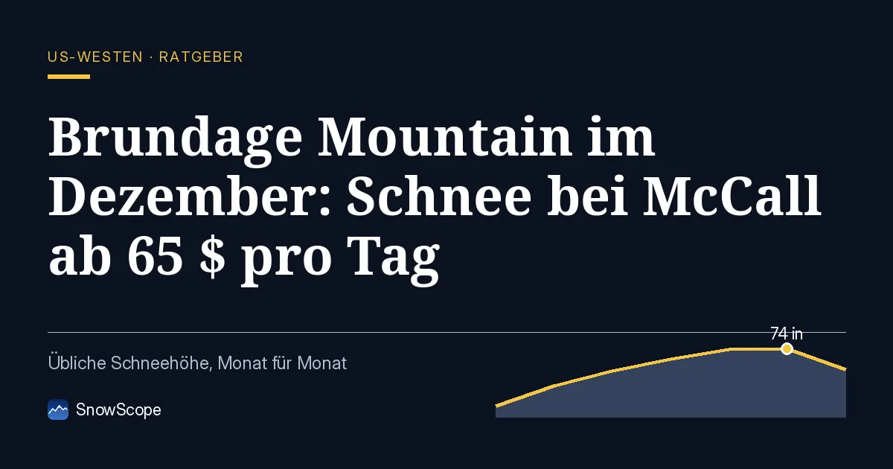

Brundage Mountain im Dezember: Schnee bei McCall ab 65 $ pro Tag
Brundage, oberhalb der Seestadt McCall, ist laut unserer Schneehistorie eines der zuverlässigsten Frühsaison-Gebiete Idahos, und seine Tickets starten bei nur 65 $. Der Trick ist, früh zu kaufen und die Feiertagswochen zu meiden.
Die Live-Schneeprognose für Brundage Mountain in der SnowScope-AppSchneehöhen, Pulverschnee-Alarme und 3D-Karte, gratis.
See unten, Schnee oben
McCall liegt am Payette Lake, und Brundage erhebt sich direkt nördlich der Stadt. Auf unserer Karte hat es 6 Lifte und rund 30 mi (49 km) Pisten zwischen etwa 5.880 ft (1.792 m) und 7.600 ft (2.318 m). Es ist ein Gebiet für Einheimische, und unter der Woche ist es ruhig.

Wie die Preisgestaltung funktioniert
Brundage verkauft dynamische Tickets: Sie starten an ausgewählten Tagen bei nur 65 $, und die Preise steigen, je näher der Besuchstermin rückt. Die Feiertagsspitze läuft vom 19. Dezember 2026 bis zum 3. Januar 2027, in der man nicht die unteren Preise erwarten sollte.
Brundage steht auch auf der Indy-Pass-Liste. Der Indy Base Pass kostet 419 $ und der Indy+ Pass ohne Sperrtage 469 $; jeder gibt zwei Tage in jedem Mitgliedsgebiet.

Dezember, Woche für Woche
Dauerhafter Schnee erreicht die Bergmitte, etwa 6.740 ft (2.055 m), meist Mitte Oktober. Der Anteil der Winter mit guter Schneelage dort (ein Wochenmittel von 20 in, 50 cm, oder mehr) liegt bei 67 % in der ersten Dezemberwoche, 85 % in der zweiten, 93 % in der dritten und 96 % in der Weihnachtswoche.
Konkret: Ein typischer 1. Dezember hat 22 in (55 cm) auf der Bergmitte, der 15. Dezember 30 in (77 cm) und der Weihnachtstag 38 in (97 cm). Am 15. Dezember hatte jeder Winter unserer Aufzeichnung mindestens 10 in (25 cm) auf der Bergmitte, und 87 % hatten 20 in oder mehr. Ein magerer Dezember ließ trotzdem noch 19 in (48 cm) übrig.
Brundage, Schweitzer oder Lookout?
Schweitzer hat tieferen Schnee oben, 54 in (138 cm) an einem typischen 15. Dezember, und einen 3-Pack für 249 $. Lookout Pass verkauft Tickets unter der Woche mit Reservierung für 63 $ und hatte 30 in (75 cm) auf der Bergmitte an einem typischen 15. Dezember.
Brundage liegt beim Schnee auf der Bergmitte gleichauf mit Lookout und ist an der Basis etwas verlässlicher: 22 in (57 cm) an einem typischen 15. Dezember, mit 65 % der Winter über 20 in dort.
Die ehrliche Ecke
Die Frühsaison hat sich leicht ausgedünnt: 33 in (83 cm) auf der Bergmitte an einem typischen 15. Dezember in den ersten 15 Wintern unserer Aufzeichnung, 24 in (61 cm) in den letzten 15, mit 93 % bzw. 80 % der Winter über 20 in. Der letzte Winter hatte an diesem Datum 19 in (47 cm).
Tipps für Skifahrer
- Kaufen Sie so früh wie möglich: Die Preise bei Brundage steigen, je näher das Datum rückt.
- Fahren Sie zwischen der zweiten Dezemberwoche und dem 18. Dezember für gute Chancen vor den Feiertagspreisen.
- Die Straße von Boise folgt dem Canyon des Payette River: Zeit einplanen und Ketten mitnehmen.
- McCall hat die Betten und das Essen; Brundage hat die kurze Anfahrt und den frühen Parkplatz.
Quellen und Nachweise
- Brundage Mountain, daily lift tickets (official) brundage.com/daily-lift-tickets/
- Indy Pass, shop 2026-27 (official) www.indyskipass.com/shop
- Schweitzer, lift ticket 3-Pack 2026/2027 (official) www.schweitzer.com/plan-your-trip/deals-and-packages/lift-ticket-3pack
- Lookout Pass, lift tickets 2026-2027 (official) skilookout.com/lift-tickets/
- OpenSkiMap (mapped lifts and runs) openskimap.org/
- avalanche.org, US avalanche centers and forecasts avalanche.org/
Zu diesen Zahlen
Schneewerte: SnowScope-Schneehistorie, 46 vergangene Winter (1980-81 bis 2025-26) auf den angegebenen Höhen (Tal, Mitte, Gipfel), eine höhenkorrigierte Rekonstruktion des früheren Schnees für eine Fläche (auf Basis von ERA5-Land; Snow_Hydro 1 km für Marokko), keine Meldungen des Skigebiets. Aktueller Schnee: die SnowScope-Schneekarte. Lifte, Pisten und Höhen: OpenSkiMap-Kartierung. Preise: die unten genannten offiziellen Seiten, gelesen am 13. November 2026; dynamische Preise ändern sich mit Datum und Nachfrage.
Offizielle Lawinenlageberichte: avalanche.org (US national portal)
Diesen Bericht zitieren
Für Forschung, Lehre oder Presse: Zahlen und Grafiken sind unter CC BY 4.0 mit dieser Quellenangabe frei nutzbar.
SnowScope (2026), Brundage Mountain im Dezember: Schnee bei McCall ab 65 $ pro Tag, https://snowscope.app/blog/de/2026/11/brundage-mountain-mccall-december-ski-budget.html, abgerufen am 2026-11-14
SnowScope (Atlas Labs). (2026, November 14). Brundage Mountain im Dezember: Schnee bei McCall ab 65 $ pro Tag. SnowScope snow reports. https://snowscope.app/blog/de/2026/11/brundage-mountain-mccall-december-ski-budget.html
BibTeX
@misc{snowscope2026brundagemountainmccallde,
author = {{SnowScope (Atlas Labs)}},
title = {Brundage Mountain im Dezember: Schnee bei McCall ab 65 $ pro Tag},
year = {2026},
month = nov,
howpublished = {\url{https://snowscope.app/blog/de/2026/11/brundage-mountain-mccall-december-ski-budget.html}},
note = {Published 2026-11-14 20:07 UTC; accessed 2026-11-14}
}· CC BY 4.0 · Methoden, Daten und Werkzeuge →
Brundage Mountain: Schnee und Temperatur nach Höhe, dieser Winter vs letzter (Werkzeuge) →
Brundage Mountain folgen
Gratis: eine Nachricht, wenn Neuschnee kommt, und jeden Morgen die Vorhersage.